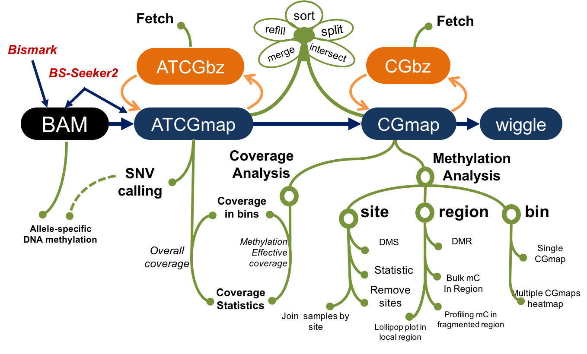

1 What is CGmapTools

Figure 1.1: Schematic diagram of CGmapTools
DNA methylation is crucial for a wide variety of biological processes. With the development of high throughput methylome profiling methods, huge volumes of data are generated and in egent need of computational tools for data analysis.
We proposed CGmapTools, a bisulfite sequencing analysis toolset with enhanced features on SNV calling and allele specific methylations and visualizations, in hope to set up a standard for bisulfite sequencing data related manipulation, including better data storage, extraction, visualization and improved performence in SNP calling. We also provide dozens of utilities and a seamless pipeline for bisulfite sequencing data analysis.
Command
cgmaptools -h# Program : cgmaptools (Tools for analysis in CGmap/ATCGmap format)
# Version: 0.0.1
# Usage: cgmaptools <command> [options]
# Commands:
# -- File manipulation
# convert + data format conversion tools
# fetch + fetch a region by random accessing
# refill refill the missing columns
# intersect intersect two files
# merge2 + merge two files into one
# mergelist + merge a list of files
# sort sort lines by chromosome and position
# split + split file by chromosomes
# select + select lines by region/site
# -- SNV analysis
# snv snv analysis
# -- Methylation analysis
# dms differentially methylated site analysis
# dmr differentially methylated region analysis
# asm allele-specific methylation analysis
# mbed average methylation level in regions
# mbin * single sample, mC levels in bins
# mmbin multiple samples, mC levels in bins
# mfg methlation levels across fragmented region
# mstat * methyaltion statistic
# mtr methylation level to each region
# -- Coverage analysis
# oac +* overall coverage (for ATCGmap)
# mec +* methylation effective coverage (for CGmap)
# -- Graph related functions
# lollipop * show local mC levels as lollipop bars
# heatmap * global mC distribution for multiple samples
# fragreg * show mC profile across fragmented regions
# tanghulu * show local mapped reads in Tanghulu shape
# -- Other Utils
# findCCGG get MspI cutting sites for RRBS
# bed2fragreg get fragmented region based on region
# Note:
# Commands support figures generation are marked with "*"
# Commands contain sub-commands are marked with "+"
# Authors:
# GUO, Weilong; guoweilong@126.com; http://guoweilong.github.io
# ZHU, Ping; pingzhu.work@gmail.com; http://perry-zhu.github.io